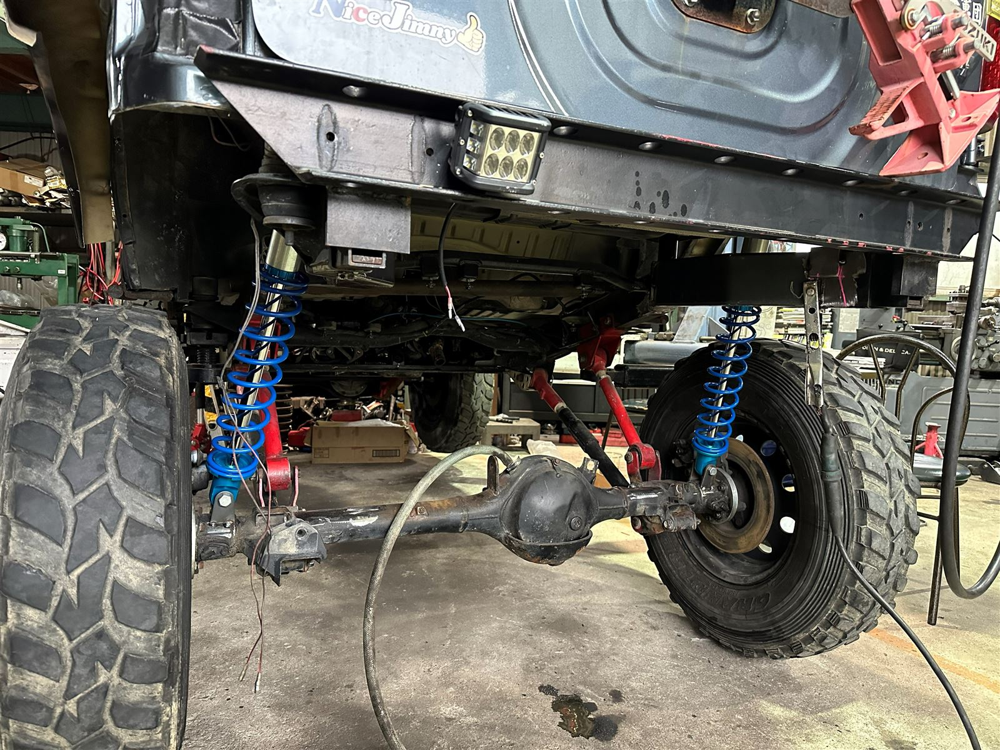

WORK 02
JB23リアフレーム加工 King コイルオーバー取付
/ 作業事例
製作記録 // JB23

JB23のリアフレーム・フェンダー内のクリアランスを加工し、ロングストロークのKingコイルオーバーを取付けました。 左右それぞれにマウントブラケットを製作・溶接し、サスペンションジオメトリとストロークを考慮しながら仕上げています。
スウェイバーやコントロールアームとの組み合わせも含め、オンロードの安定性とオフロードでの可動域のバランスを取りながら リア周り全体をセッティングしています。
- リアフレーム・フェンダーの採寸・加工（コイルオーバークリアランス確保）
- コイルオーバーマウントブラケットの製作・溶接（左右）
- Kingコイルオーバー・スウェイバー・コントロールアームの取付
- 車高・ジオメトリ確認、動作確認
※ このページはサンプル原稿です。実際の作業内容に合わせて書き換えてください。